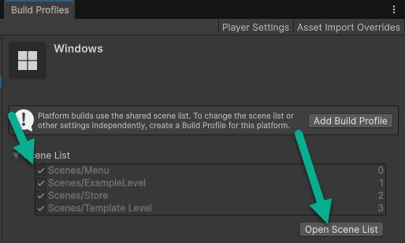
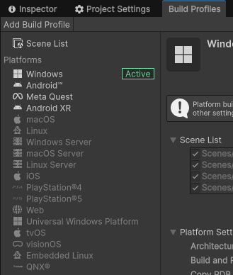
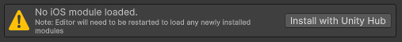
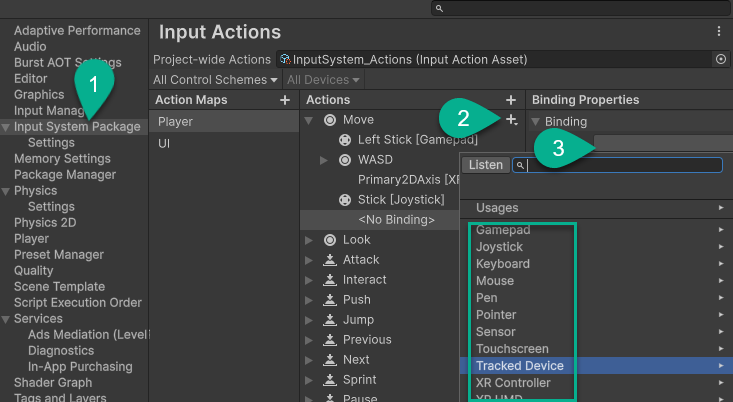
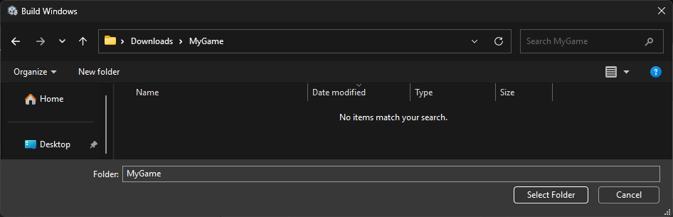
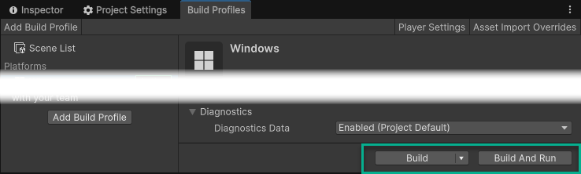
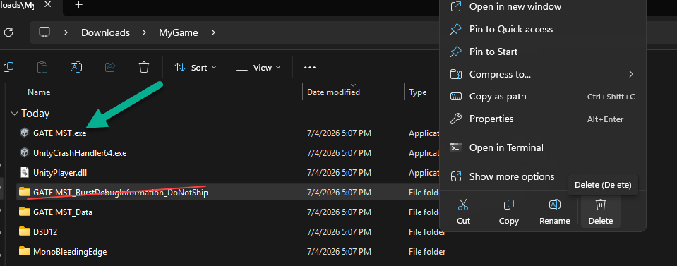

Creating Your Game Build
Convert your project into a format that others can play
Specifying Included Scenes
The Scene List is in the Build Profiles section. Any scene not included in the scene list (even if you've playtested it in the editor) will not appear in the final game.
Make sure you have included all the scenes you intend for your player to use.

Selecting Build Platform(s)
Unity is a cross-platform engine, meaning you can build your game to almost any platform.
- You select the platform(s) in the Build Profiles section.

- You will need to have installed the appropriate modules, which it will prompt you to do if not done.

-
You will also want to make sure you have configured the inputs to include the inpupt devices expected on that platform (touchscreen, controller, ...etc.)
You shouldn't have to create new actions, just new bindings under each action if needed.

Exporting to Device
In the Build Profiles screen:
-
if you select Build, it will compile your game into a shareable executable (or comparable file on other platforms) and save it to a location of your choosing.
(We recommend you save it somewhere outside your project folder like your downloads, and make sure it's contained within its own folder as it will have some extra files to install. You can keep installing over top of the previous files in the same folder when building a new version.)

- If you select Build And Run, it will build the file and start the game running on the device (on your PC if Windows is enabled, or on your Android, Meta Quest, or iPhone if you have a connected device in developer mode.)

- There are a number of factors to consider for special circumstances, but generally you get a functional game with the default settings.
- It will take several minutes to build the game. (...possibly longer if it's the first time or the first time after major changes, or if you're on a less-powerful computer.)
- When sharing or distributing your game, remember to remove the folder(s) marked as Do Not Ship. Run the main executable to play the game.

- If you just want to share it with friends or put it up for free on a website, you can just zip up the folder and send it or host it anywhere.
- If you want to share it publicly or sell it, there are a few places. We have a guide that goes over the pros and cons of many of these storefronts.
Distributing Your Game
When you're done with your game, you'll want somewhere to show it off.